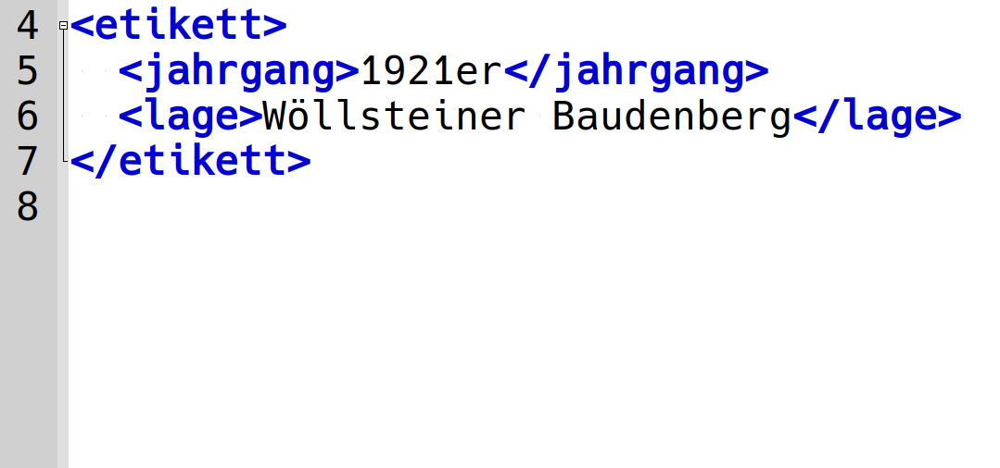
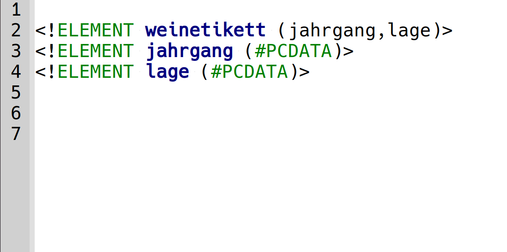
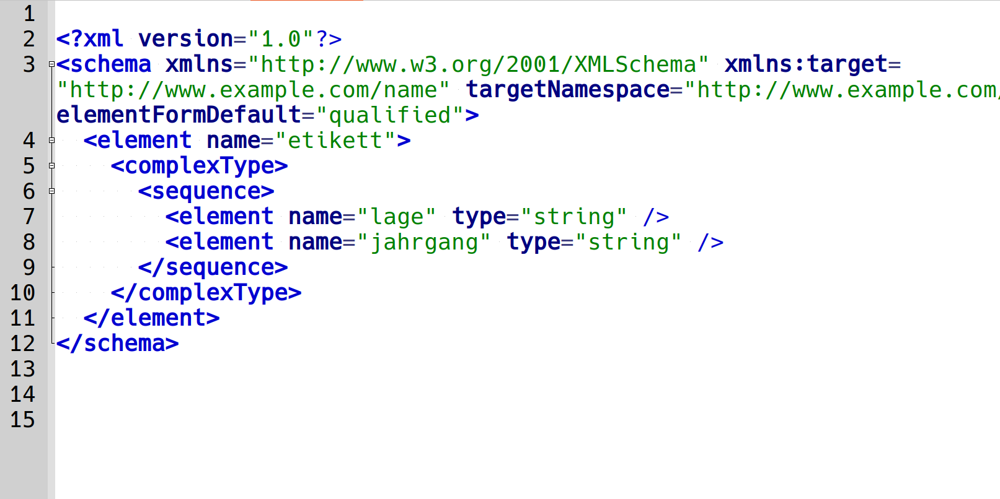
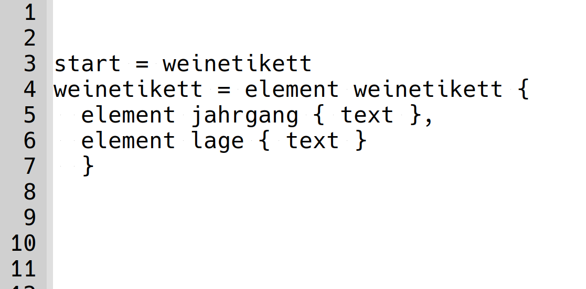
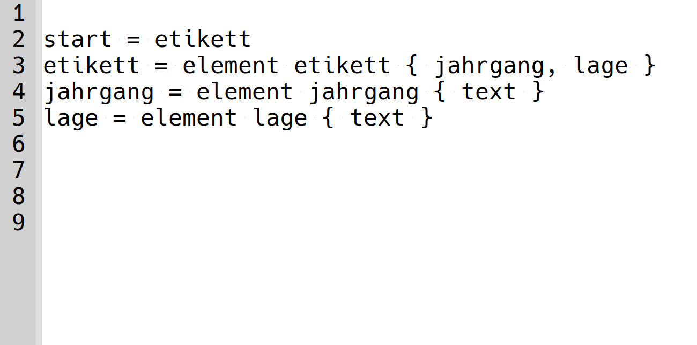

# Validierung von XML-Dokumenten <br/> <hr/> <br/>Prof. Dr. Christof Schöch <br/> <br/> <hr/> <p><strong>Modul Auszeichnungssprachen<br/>MSc. Digital Humanities, Universität Trier</strong></p> <hr/> <img height="60" data-src="img/basics/uni-trier.png"> :: - Ziele dieser Sitzung: - Vermitteln, warum Validierung nützlich ist --- ## Überblick 1. [Was ist Validieren?](#/2) 1. [Schema-Sprachen im Überblick](#/3) 1. [Syntax von RelaxNG (compact syntax)](#/4) 1. [Beispiel: Weinetiketten](#/5) -- ## (1) Was ist Validieren? --- #### Eric van der Vlist >Validation can be about checking the structure of XML documents. It can be about checking the content of each text node and attribute independently of each other (datatype checking). It can be about checking constraints on relationships between nodes. It can be about checking constraints between nodes and external information such as lookup tables or links. It can be about checking business rules. Taken liberally, it can be almost anything else, even spell checking. All of these aspects are important for improving the level of quality of XML-based information systems. <small>(Quelle: Eric van der Vlist, <em>RelaxNG</em>, [Kapitel 1, Section 3](http://books.xmlschemata.org/relaxng/relax-CHP-1-SECT-3.html).)</small> --- #### Was ist Validieren? * Prüfen auf Wohlgeformtheit * Prüfen, ob das spezifische Vokabular eingehalten wurde * Elemente * Attribute * Werte (Datentypen) * Prüfen, ob die spezifische Syntax eingehalten wurde * hierarchische Anordnung der Elementen * Platzierung der Attribute * Durch Prüfen von Regeln oder Abgleich mit Mustern --- #### Warum Validieren? * Die systematische, vollständige Eingabe von Daten wird unterstützt (Tooltips, Autocomplete) * Tippfehler bei Namen von Elementen und Attributen werden erkannt * Unpassende Datentypen bei Elementinhalt oder Attributwerten werden erkannt * Nicht sinnvolle Anordnungen von Elementen werden erkannt * Die Weiterverarbeitung der Dokumente wird erleichtert (Transformationen, Informationsextraktion) -- ## (2) Schema-Sprachen im Überblick --- #### Beispiel Weinetiketten --- #### Kodierung: Weinetiketten  --- #### Welche Schema-Sprachen gibt es? * DTD (Document Type Definition) * XSD (XML Schema Definitions; (W3C) * RelaxNG (REgular LAnguage for XML, New Generation) * XML-Syntax * compact syntact * ODD (One Document Does it All; TEI) * Schematron --- #### DTD: Beispiel  --- #### DTD (Document Type Definition) * Vorteile * Weit verbreitet * sehr kompakt * Einschränkungen * DTD Syntax: an SGML orientiert, nicht an XML * XML Namespaces werden nicht gut unterstützt (Präfixe müssen festgelegt werden) * Datentypen werden nicht gut unterstützt (nur auf Attributen möglich) * Eingeschränkte Möglichkeiten bei den Content Models (bspw.: keine numerischen Quantoren) --- #### XSD: Beispiel  --- #### XSD (XML Schema Declaration) * Vorteile * Die gewohnte XML Syntax gilt * XSD kann auf Wohlgeformtheit geprüft werden * Namespaces können flexibel eingesetzt werden * Datentypen für Elemente (Textinhalt) und Attribute können definiert werden * Nachteile * Etwas komplexer zu schreiben / zu lesen * Etwas "more verbose" --- #### Relax NG (compact, nested)  --- #### Relax NG (compact, flat)  --- #### Relax NG * Vorteile * Einfach zu lernen, einfacher zu lesen * Muster-basierte Syntax * Elemente und Attribute funktionieren analog * Zwei Varianten: XML Syntax und "compact syntax" * Unterstützt XSD Datentypen (int, date, decimal, etc.) * Unterstützt auch nutzerdefinierte Datentypen * Unterstützt XML Namespaces --- #### Übrigens: Trang * Mit "Trang" kann man Schemas aus einem Format in ein anderes konvertieren * https://relaxng.org/jclark/trang.html -- ## (3) Syntax von RelaxNG<br/>(compact syntax) --- ### RelaxNG: Bausteine ``` element etikett { jahrgang, lage } attribut jahr { text } ``` <br/> * Muster: `element` und `attribute` patterns * Elemente und Attribute haben "content patterns" * Muster sind rekursiv: können verschachtelt werden * Elemente und Attribute funktionieren fast gleich * Aber: Reihenfolge spielt bei Attributen keine Rolle * Und: Attribute können keine Elemente oder Attribute enthalten --- #### RelaxNG: Kardinalität ``` element etikett { lage*, jahr+ } element etikett { lage, jahr? } ``` * default: genau 1x ("once") * `?`: 0x oder 1x ("optional") * `*`: 0x, 1x, mehrfach ("zero or more") * `+`: 1x oder mehrfach ("once or more") --- #### RelaxNG: Verknüpfungen, Gruppen ``` element etikett { lage & jahr } element etikett { (lage | jahr), ort* } ``` * `,` : Sequenz, feste Reihenfolge * `&` : "interleave", beliebige Reihenfolge * `|` : mehrere Alternativen * `()` : Gruppen --- #### RelaxNG: Werte festlegen ``` attribut jahr { "1921" | "1922" | "1923" } attribut jahr { xsd:integer } ``` * string / token ; mit "enumeration" * xsd:language * xsd:decimal, xsd:integer * xsd:date, xsd:gYear Details: siehe [Liste der Datentypen](http://books.xmlschemata.org/relaxng/relax-CHP-8-SECT-1.html#relax-CHP-8-SECT-1.1) -- ## Abschluss --- #### Weitere Themen * co-occurrence patterns (Abhängigkeiten) * named patterns (mehrfach nutzbar) * Rekursive Strukturen * Umgang mit Whitespace * Namespaces --- #### Und jetzt? * Anwendungsbeispiel Weinetiketten --- #### Lektürehinweise Grundlagen * Georg Vogeler und Patrick Sahle: „XML“, in: Digital Humanities: Eine Einführung, hg. von Fotis Jannidis, Hubertus Kohle und Malte Rehbein. Stuttgart: Metzler, 2017, 128-146. Referenzlektüre * David Hunter et al.: "Part II - Validation: Kapitel 7: Relax NG" in: *Beginning XML*, 4th edition. Wiley, 2007. Weitere Empfehlungen zur Vertiefung * David Hunter et al.: "Part II - Validation" in: *Beginning XML*, 4th edition. Wiley, 2007, S. 95-246. (DTDs, XML Schema, Relax NG) * Eric van der Vlist. *Relax NG*. O'Reilly Media, 2003. http://books.xmlschemata.org/relaxng/ --- ## Danke! <br/><br/> <br/><br/> <br/><br/> <hr/> <small> <br/>Lizenz: <a href="https://creativecommons.org/licenses/by/4.0/">Creative Commons Attribution (CC BY)</a>, 2020. </small> <hr/>